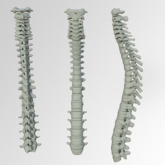

|  |
Kosti trupa čine : kičmeni stub- kičma, rebra i grudna kost. Kičma se proteže sredinom leđnog dijela trupa i ona je oslonac i potpora svim kostima, drži tijelo uspravno i štiti kičmenu moždinu. Sastoji se od kičmenih pršljenova kojih ima 33 ili 34 i međusobno su spojeni hrskavicom. Prema dijelu trupa kojem pripadaju dijele se na 7 vratnih, 12 grudnih, 5 slabinskih, 5 krsnih i 4-5 trtičnih. |
Rebra su uzane, dugačke, pljosnate i lučno savijene kosti. Ima ih dvanaest pari. Rebra su na leđnoj strani spojena sa kičmom, a na trbušnoj strani sa grudnom kosti. Prvih sedam pari rebara spaja se sa grudnom kosti pomoću hrskavice, a osmi, deveti i deseti par se spajaju preko hrskavice sedmog rebra. Dva donja para rebra imaju slobodne krajeve. Rebra, leđni dio kičme i grudna kost grade grudni koš, koji štiti srce i pluća.